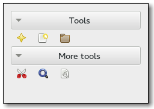

Gtk.ToolPalette
Example
Methods
| Inherited: | Gtk.Container (27), Gtk.Widget (256), GObject.Object (33), Gtk.Buildable (10), Gtk.Orientable (2), Gtk.Scrollable (8) |
|---|
| static | get_drag_target_group() |
| static | get_drag_target_item() |
| static | new() |
| add_drag_dest(widget, flags, targets, actions) | |
| get_drag_item(selection) | |
| get_drop_group(x, y) | |
| get_drop_item(x, y) | |
| get_exclusive(group) | |
| get_expand(group) | |
| get_group_position(group) | |
| get_hadjustment() | |
| get_icon_size() | |
| get_style() | |
| get_vadjustment() | |
| set_drag_source(targets) | |
| set_exclusive(group, exclusive) | |
| set_expand(group, expand) | |
| set_group_position(group, position) | |
| set_icon_size(icon_size) | |
| set_style(style) | |
| unset_icon_size() | |
| unset_style() |
Virtual Methods
| Inherited: | Gtk.Container (10), Gtk.Widget (82), GObject.Object (7), Gtk.Buildable (10) |
|---|
Properties
| Inherited: | Gtk.Container (3), Gtk.Widget (38), Gtk.Orientable (1), Gtk.Scrollable (4) |
|---|
| Name | Type | Flags | Short Description |
|---|---|---|---|
| icon-size | Gtk.IconSize | r/w | Size of icons in this tool palette |
| icon-size-set | bool | r/w | Whether the icon-size property has been set |
| toolbar-style | Gtk.ToolbarStyle | r/w | Style of items in the tool palette |
Child Properties
| Name | Type | Default | Flags | Short Description |
|---|---|---|---|---|
| exclusive | bool | False | r/w | Whether the item group should be the only expanded at a given time |
| expand | bool | False | r/w | Whether the item group should receive extra space when the palette grows |
Style Properties
| Inherited: | Gtk.Widget (17) |
|---|
Signals
| Inherited: | Gtk.Container (4), Gtk.Widget (69), GObject.Object (1) |
|---|
Fields
| Inherited: | Gtk.Container (1), Gtk.Widget (1), GObject.InitiallyUnowned (3), GObject.Object (3) |
|---|
| Name | Type | Access | Description |
|---|---|---|---|
| parent_instance | Gtk.Container | r |
Class Details
- class Gtk.ToolPalette(**kwargs)
Bases: Gtk.Container, Gtk.Orientable, Gtk.Scrollable
A Gtk.ToolPalette allows you to add Gtk.ToolItems to a palette-like container with different categories and drag and drop support.
A Gtk.ToolPalette is created with a call to Gtk.ToolPalette.new ().
Gtk.ToolItems cannot be added directly to a Gtk.ToolPalette - instead they are added to a Gtk.ToolItemGroup which can than be added to a Gtk.ToolPalette. To add a Gtk.ToolItemGroup to a Gtk.ToolPalette, use Gtk.Container.add ().
<!-- language="C" --> GtkWidget *palette, *group; GtkToolItem *item; palette = gtk_tool_palette_new (); group = gtk_tool_item_group_new (_("Test Category")); gtk_container_add (GTK_CONTAINER (palette), group); item = gtk_tool_button_new_new (NULL, _("_Open")); gtk_tool_button_set_icon_name (GTK_TOOL_BUTTON (item), "document-open"); gtk_tool_item_group_insert (GTK_TOOL_ITEM_GROUP (group), item, -1);
The easiest way to use drag and drop with Gtk.ToolPalette is to call Gtk.ToolPalette.add_drag_dest () with the desired drag source palette and the desired drag target widget. Then Gtk.ToolPalette.get_drag_item () can be used to get the dragged item in the Gtk.Widget ::drag-data-received signal handler of the drag target.
<!-- language="C" --> static void passive_canvas_drag_data_received (GtkWidget *widget, GdkDragContext *context, gint x, gint y, GtkSelectionData *selection, guint info, guint time, gpointer data) { GtkWidget *palette; GtkWidget *item; // Get the dragged item palette = gtk_widget_get_ancestor (gtk_drag_get_source_widget (context), GTK_TYPE_TOOL_PALETTE); if (palette != NULL) item = gtk_tool_palette_get_drag_item (GTK_TOOL_PALETTE (palette), selection); // Do something with item } GtkWidget *target, palette; palette = gtk_tool_palette_new (); target = gtk_drawing_area_new (); g_signal_connect (G_OBJECT (target), "drag-data-received", G_CALLBACK (passive_canvas_drag_data_received), NULL); gtk_tool_palette_add_drag_dest (GTK_TOOL_PALETTE (palette), target, GTK_DEST_DEFAULT_ALL, GTK_TOOL_PALETTE_DRAG_ITEMS, GDK_ACTION_COPY);
- static get_drag_target_group()
Returns: the Gtk.TargetEntry for a dragged group Return type: Gtk.TargetEntry Get the target entry for a dragged Gtk.ToolItemGroup.
New in version 2.20.
- static get_drag_target_item()
Returns: the Gtk.TargetEntry for a dragged item. Return type: Gtk.TargetEntry Gets the target entry for a dragged Gtk.ToolItem.
New in version 2.20.
- static new()
Returns: a new Gtk.ToolPalette Return type: Gtk.Widget Creates a new tool palette.
New in version 2.20.
- add_drag_dest(widget, flags, targets, actions)
Parameters: - widget (Gtk.Widget) – a Gtk.Widget which should be a drag destination for palette
- flags (Gtk.DestDefaults) – the flags that specify what actions GTK+ should take for drops on that widget
- targets (Gtk.ToolPaletteDragTargets) – the Gtk.ToolPaletteDragTargets which the widget should support
- actions (Gdk.DragAction) – the Gdk.DragActions which the widget should suppport
Sets palette as drag source (see Gtk.ToolPalette.set_drag_source ()) and sets widget as a drag destination for drags from palette. See Gtk.Widget.drag_dest_set ().
New in version 2.20.
- get_drag_item(selection)
Parameters: selection (Gtk.SelectionData) – a Gtk.SelectionData Returns: the dragged item in selection Return type: Gtk.Widget Get the dragged item from the selection. This could be a Gtk.ToolItem or a Gtk.ToolItemGroup.
New in version 2.20.
- get_drop_group(x, y)
Parameters: Returns: the Gtk.ToolItemGroup at position or None if there is no such group
Return type: Gets the group at position (x, y).
New in version 2.20.
- get_drop_item(x, y)
Parameters: Returns: the Gtk.ToolItem at position or None if there is no such item
Return type: Gets the item at position (x, y). See Gtk.ToolPalette.get_drop_group ().
New in version 2.20.
- get_exclusive(group)
Parameters: group (Gtk.ToolItemGroup) – a Gtk.ToolItemGroup which is a child of palette Returns: True if group is exclusive Return type: bool Gets whether group is exclusive or not. See Gtk.ToolPalette.set_exclusive ().
New in version 2.20.
- get_expand(group)
Parameters: group (Gtk.ToolItemGroup) – a Gtk.ToolItemGroup which is a child of palette Returns: True if group should be given extra space, False otherwise Return type: bool Gets whether group should be given extra space. See Gtk.ToolPalette.set_expand ().
New in version 2.20.
- get_group_position(group)
Parameters: group (Gtk.ToolItemGroup) – a Gtk.ToolItemGroup Returns: the index of group or -1 if group is not a child of palette Return type: int Gets the position of group in palette as index. See Gtk.ToolPalette.set_group_position ().
New in version 2.20.
- get_hadjustment()
Returns: the horizontal adjustment of palette Return type: Gtk.Adjustment Gets the horizontal adjustment of the tool palette.
New in version 2.20.
Deprecated since version 3.0: Use Gtk.Scrollable.get_hadjustment ()
- get_icon_size()
Returns: the Gtk.IconSize of icons in the tool palette Return type: int Gets the size of icons in the tool palette. See Gtk.ToolPalette.set_icon_size ().
New in version 2.20.
- get_style()
Returns: the Gtk.ToolbarStyle of items in the tool palette. Return type: Gtk.ToolbarStyle Gets the style (icons, text or both) of items in the tool palette.
New in version 2.20.
- get_vadjustment()
Returns: the vertical adjustment of palette Return type: Gtk.Adjustment Gets the vertical adjustment of the tool palette.
New in version 2.20.
Deprecated since version 3.0: Use Gtk.Scrollable.get_vadjustment ()
- set_drag_source(targets)
Parameters: targets (Gtk.ToolPaletteDragTargets) – the Gtk.ToolPaletteDragTargets which the widget should support Sets the tool palette as a drag source. Enables all groups and items in the tool palette as drag sources on button 1 and button 3 press with copy and move actions. See Gtk.Widget.drag_source_set ().
New in version 2.20.
- set_exclusive(group, exclusive)
Parameters: - group (Gtk.ToolItemGroup) – a Gtk.ToolItemGroup which is a child of palette
- exclusive (bool) – whether the group should be exclusive or not
Sets whether the group should be exclusive or not. If an exclusive group is expanded all other groups are collapsed.
New in version 2.20.
- set_expand(group, expand)
Parameters: - group (Gtk.ToolItemGroup) – a Gtk.ToolItemGroup which is a child of palette
- expand (bool) – whether the group should be given extra space
Sets whether the group should be given extra space.
New in version 2.20.
- set_group_position(group, position)
Parameters: - group (Gtk.ToolItemGroup) – a Gtk.ToolItemGroup which is a child of palette
- position (int) – a new index for group
Sets the position of the group as an index of the tool palette. If position is 0 the group will become the first child, if position is -1 it will become the last child.
New in version 2.20.
- set_icon_size(icon_size)
Parameters: icon_size (int) – the Gtk.IconSize that icons in the tool palette shall have Sets the size of icons in the tool palette.
New in version 2.20.
- set_style(style)
Parameters: style (Gtk.ToolbarStyle) – the Gtk.ToolbarStyle that items in the tool palette shall have Sets the style (text, icons or both) of items in the tool palette.
New in version 2.20.
- unset_icon_size()
Unsets the tool palette icon size set with Gtk.ToolPalette.set_icon_size (), so that user preferences will be used to determine the icon size.
New in version 2.20.
- unset_style()
Unsets a toolbar style set with Gtk.ToolPalette.set_style (), so that user preferences will be used to determine the toolbar style.
New in version 2.20.
Property Details
- Gtk.ToolPalette.props.icon_size
Name: icon-size Type: Gtk.IconSize Default Value: Gtk.IconSize.SMALL_TOOLBAR Flags: r/w The size of the icons in a tool palette. When this property is set, it overrides the default setting.
This should only be used for special-purpose tool palettes, normal application tool palettes should respect the user preferences for the size of icons.
New in version 2.20.
- Gtk.ToolPalette.props.icon_size_set
Name: icon-size-set Type: bool Default Value: False Flags: r/w Is True if the Gtk.ToolPalette :icon-size property has been set.
New in version 2.20.
- Gtk.ToolPalette.props.toolbar_style
Name: toolbar-style Type: Gtk.ToolbarStyle Default Value: Gtk.ToolbarStyle.ICONS Flags: r/w The style of items in the tool palette.
New in version 2.20.